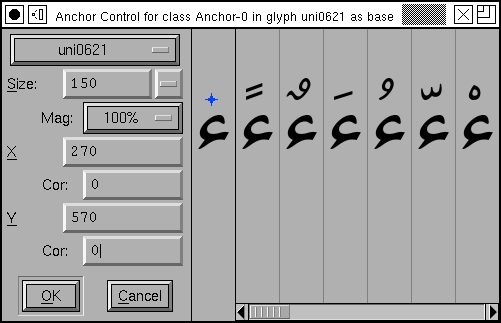
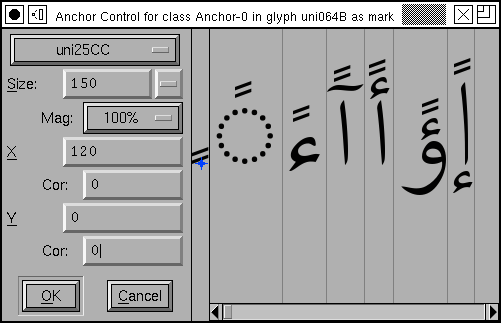

You invoke this dialog from the outline glyph
view by selecting an anchor point in that glyph and selecting
Metrics->Anchor Control. In the example at
right, the arabic letter Hamza was chosen. In the first pane of
the dialog are various controls, next to that is a pane
displaying the letter Hamza and showing the anchor point
relative to that letter. You may move the anchor point around
to position it as you wish.
After this there is a scrollable region containing multiple sub-panes. Each sub-pane contains one combination of Hamza and a mark that fits on top of it. If you click in one of these sub-panes, FontForge changes the dialog to look at the mark you selected. Here we clicked on the Fathatan mark, and we now see all the base letters that fit underneath it. This dialog now gives you control of the anchor point in the Fathatan mark.
At the top of the control region is a pull down list containing the names of all glyphs in this anchor class. You may look at the combinations based on any of them. You may also use the Page Up and Page Down keys to cycle through this list.
You may control the pixelsize used to display the combinations. Sometimes it is important to get a close up view of a small pixelsize (which may be quite different from looking at a larger pixelsize) and the Magnification field allows for this.
You can also enter the anchor point's location by manual typing in the X,Y textfields at right.
You can also create something called a "Device Table", a name which is not very informative. When a font is rasterized at small pixel sizes rounding errors become important, and this is particularly true of mark positioning, where there are four things that get rounded: The locations of the each glyph's outlines (to fit them to a pixel grid), and the locations of the anchor points of each glyph. The result is that something which looks perfectly positioned at 150pixels may be either too close or too far apart at 12pixels.
You could adjust the anchor point's location slightly until
it looked right at 12pixels, of course, but that might break it
at 14 pixels. So OpenType has the concept of a Device Table
which allows you to add small corrections at particular point
sizes. Simply set the Size to a small, but common, value (say
10-24) and examine the positioning. If the results are ugly
then type a value into the appropriate
Cor(rection) field, and this will change the
spacing by that many pixels at the given display size (and no
other).
Note it may sometimes be better to define a correction in the matching glyph rather than the current one. Corrections will apply to all glyphs matched with the current one.
-- Back --